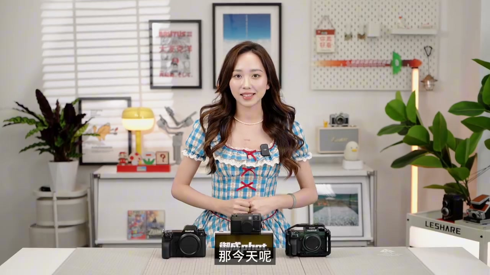
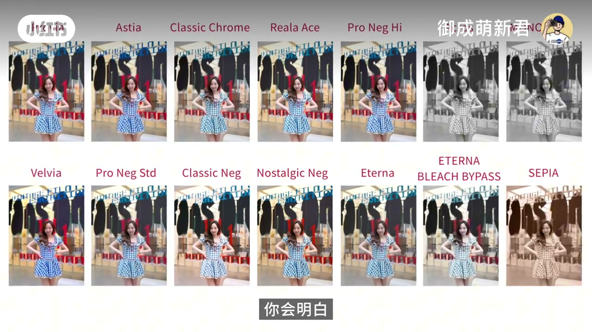
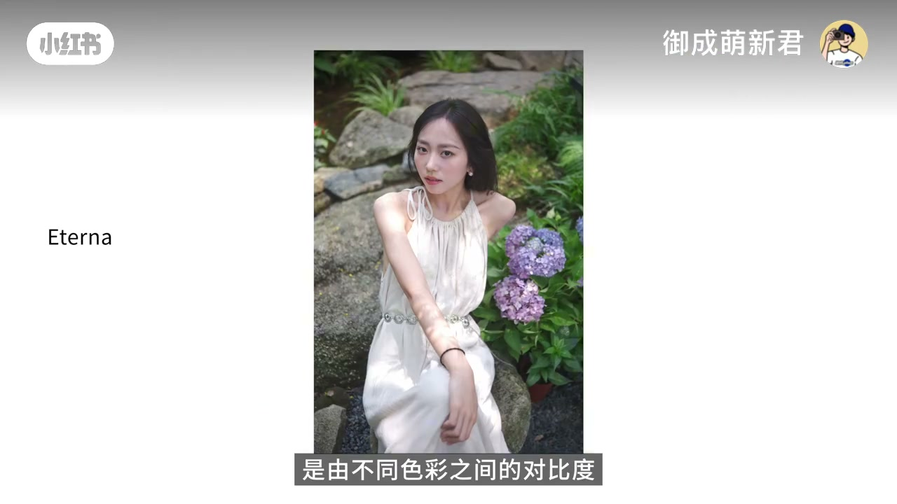
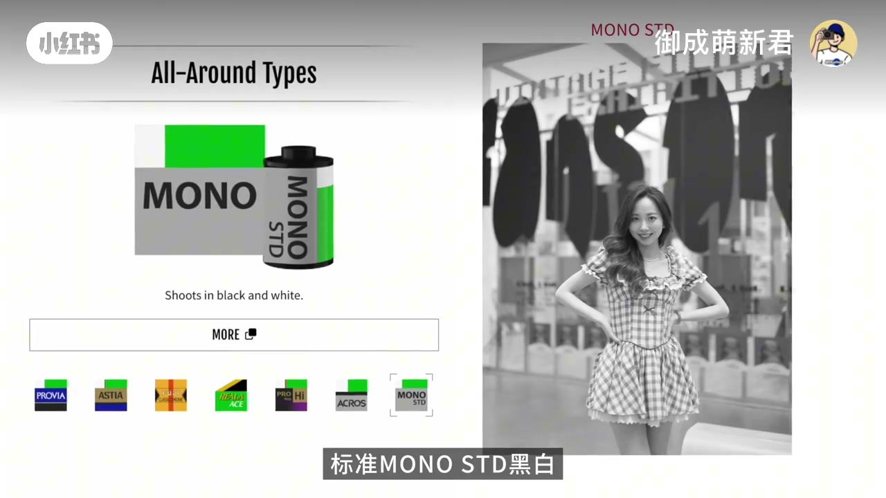
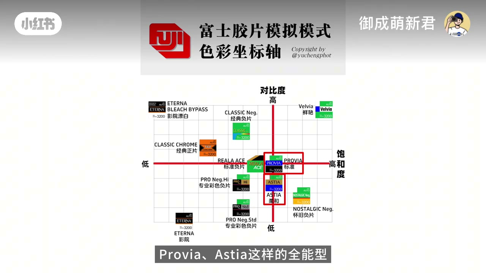
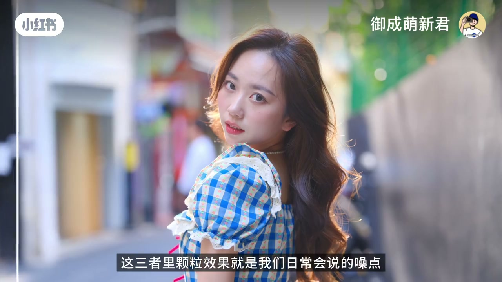
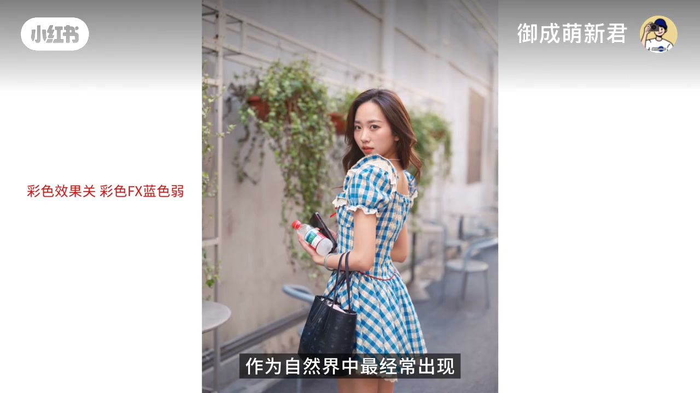
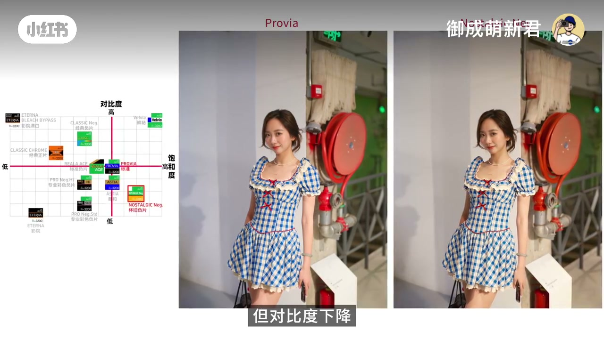

内容要点
「御成萌新君」用约五分钟拆开富士 20 种胶片模拟：先指向官方 Film Simulation 讲解页，再用对比度—饱和度坐标把「全能型」与「个性型」分开，最后落到颗粒效果、色彩效果、彩色 FX 蓝色三因子，并说明多数模拟其实是围绕 Provia 做偏移。口播专有名词经画面标签校正（如 Provia / Astia / Velvia / Reala Ace）；原 Whisper 后半段曾截断，已本地补全后写入转录区。
知识结构
胶片模拟不是随机滤镜；官方网页系统讲解 Film Simulation。
约 7 种全能型靠近坐标中心；Classic Neg / Nostalgic Neg 等靠边更难控。
颗粒（粗糙度×尺寸）、色彩效果、彩色 FX 蓝色共同塑造直出观感。
多数模拟是 Provia 在对比度/饱和度上的变体；先想色彩情感再选型。
选型顺序：先问场景要什么情绪 → 用坐标判断是否靠边难控 → 再用颗粒与冷暖 FX 微调；Provia 是多数变体的参照原点。
00:00–00:49官方网页：Film Simulation 有系统答案
开场主播坐在摆满相机的桌前，说明本期要讲清富士胶片模拟的「色彩和表达方式」。她强调很多人不知道：富士官方其实有专门网页讲解 Film Simulation（胶片模拟），而不是把机内模式当成一堆互不相关的滤镜。
画面随即切到同场景人像的多格对比——Astia、Classic Chrome、Reala Ace、Velvia、Classic Neg、Nostalgic Neg、Eterna、漂白旁路、Sepia 等并排出现——用来预告「同场景、不同态度」。接着进入官方介绍页，列出各模拟名称与说明，作为后面分类的权威参照。



00:49–02:43全能型居中，个性型靠边：纵横坐标怎么读
口播把大约七种模式归为「全能选手」：能覆盖大部分拍摄场景，其中点名到标准 MONO Std 黑白；其余约十三种——包括 Velvia、Pro Neg Std、Classic Neg、Nostalgic Neg、Eterna 以及各种色调倾向——被归为「色彩态度鲜明的个人主义风格」。
关键工具是官方纵横解释图：纵轴是色调对比度的软硬，横轴是饱和度高低。Provia、Astia 一类全能型围绕中心，对比与饱和都不极端；Classic Neg、Nostalgic Neg 等则落在轴的边缘。作者提醒：边缘风格更难把控，摄影师需要对场景的色彩基调和光线有清晰方向，否则容易「翻车」——新手觉得 Classic Neg「要么一张封神，要么成片紧皱眉头」，正是因为态度太强。


02:43–04:00颗粒、色彩效果、彩色 FX 蓝色
在区分风格之后，剩余的「色彩方向」调整被官方拆成三个重要因子：颗粒效果、色彩效果、彩色 FX 蓝色。颗粒效果就是日常说的噪点；富士提供粗糙度与尺寸两个维度，视频演示多种组合——粗糙度决定颗粒强弱，尺寸决定颗粒大小或范围。
色彩效果主要作用于易冲高饱和的红、黄、绿；彩色 FX 蓝色则管偏冷的蓝色系。二者组合可近似看作冷暖对比，会直接影响机身直出的第一观感。画面样片上出现「彩色效果关 / 彩色 FX 蓝色弱」一类标注，用来对照开关差异。


04:00–05:04围绕 Provia：二十种模拟怎么记
理解上述结构后，作者认为二十种模拟「非常好理解」：Provia 是标准色彩；Reala Ace 接近对比度不变、饱和偏低且偏暖的 Provia；Astia 是饱和大致不变、对比度降低的 Provia；Classic Neg 迅速抬对比、压饱和；Classic Chrome 大幅取消场景饱和并略抬对比；Velvia 饱和与对比都拉满；Nostalgic Neg 抬饱和但降对比；Pro Neg Hi / Std 则是不同程度地降饱和与对比。
收束句很明确：富士大部分色彩都围绕 Provia 这个核心在变化；选模拟要看场景光线明暗与饱和高低，但「最核心的关键」是你想赋予画面怎样的色彩情感——这决定成片给观看者的情绪。同场景 Provia 与 Nostalgic Neg 对照，字幕点出对比度下降，正好呼应坐标位移。

详细文字转录
以下内容按 Whisper 分段完整呈现（后半段经本地补全），可能包含识别误差；专有名词请以画面标签与正文校正为准。共 71 段。
富士相机独特的胶片模拟是吸引不少笑
主题是为了详细解析,我们在这期节目中会解释富士胶片模拟模式的色彩和表达方式。
首先,很多小伙伴不知道的是,富士官方其实有一个专门的网页来讲解富士独特的Film Simulation,翻译过来就是胶片模拟模式。
所以在官方�,
标准mono standard 黑白这7种色彩模式,属于能适用大部分拍摄场景的全能选手,而剩下的13种胶片模拟模式,
Viva, Pro Negative Standard, Classic Negative, Nostalgic Negative, Interna,以及各种色调倾向的色彩模式等都属于色彩态度鲜明的个人主义风格。
其实在富士官方的胶片模拟模式纵横解释图中可以看到,以纵轴作为色调对比度的软硬,以横轴作为色彩饱和度的高低。
Proway, Astea这样的全能型相对来说都是围绕在中心位置,对比不算过于强硬或者分散,饱和度也并不过高或者过低。
同一个场景中的照片通过富士相机生成都会集中强调这些胶片模拟模式的适用性,
但反观Classic Negative
Nostalgic Negative
这些风格强烈的胶片模拟模式
则都大部分集中在纵横两轴的边缘部分
相比来说更难把控
要求摄影师对于拍摄场景的色彩机调和光线环境
有一个更加清晰的色彩表达方向
否则就很容易翻车
这是为啥很多新手觉得Classic Negative这样的色调
要么一张风神
要么成片让自己紧揍眉头
通过对不同风格的胶片模拟模式进行区分
剩下色彩方向的调整
富士官方分为了三个重要的风格因素
分别是颗粒效果 色彩效果
FX蓝色三种
这三者里
颗粒效果就是我们日常会说的噪点
富士会提供粗糙度和尺寸两个维度
五种不同组合的调整结果
我们分别将这五种颗粒效果
为大家进行一个展现
可以很明显的看出其中的差别
粗糙度会决定模拟胶片颗粒效果的强弱
而尺寸则指的是胶片颗粒的大小
或者说是范围
他们的组合就提供了
你的富士相机机身
指出的噪点设定规律
而色彩效果和彩色FX蓝色
分别对应的是对容易造成高饱和的红 黄 绿三种色彩
和基于蓝色这种偏冷色的色彩
这两种不同的色彩范围
其实可以比较直接的看作是冷暖色对比
作为自然界中最经常出现
也是人类最敏感的色彩模式
色彩效果和彩色FX蓝色通过不同的组合
将直接影响富士机身直出的直观感受
在理解完上述信息之后
你会发现富士机身的20种胶片模拟模式非常好理解
Provia即是标准色彩格式
Ryela A4则是对比度不变
低饱和和色彩偏暖的Provia
Astia则是饱和度不变
色调对比度降低的Provia
Classic Negative是对比度迅速提升
饱和度减弱
Classic Chrome则是取消场景中大部分色彩的饱和度
稍微偏硬提升对比度
Vivia是饱和度对比度都拉满
Nostalgic Negative是饱和度增加
但对比度下降
Provative High是饱和度降低
对比度稍微降低
而Provative Standard则是饱和度对比度降低更加的明显
其实富士的大部分色彩都围绕着Provia这个色彩核心在进行变化
所以我们也根据场景中不同的光线、明暗变化、色彩饱和度高低
来设定富士相机的胶片模拟模式
但最核心的关键
你想要通过不同的胶片模拟模式赋予画面怎样的色彩情感
这其实将决定成片对于观看者的情绪表达
这是富士胶片模拟模式内在的核心因素